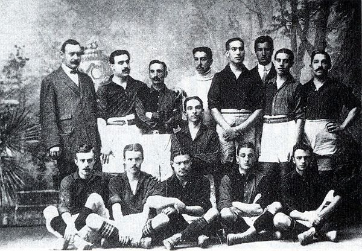
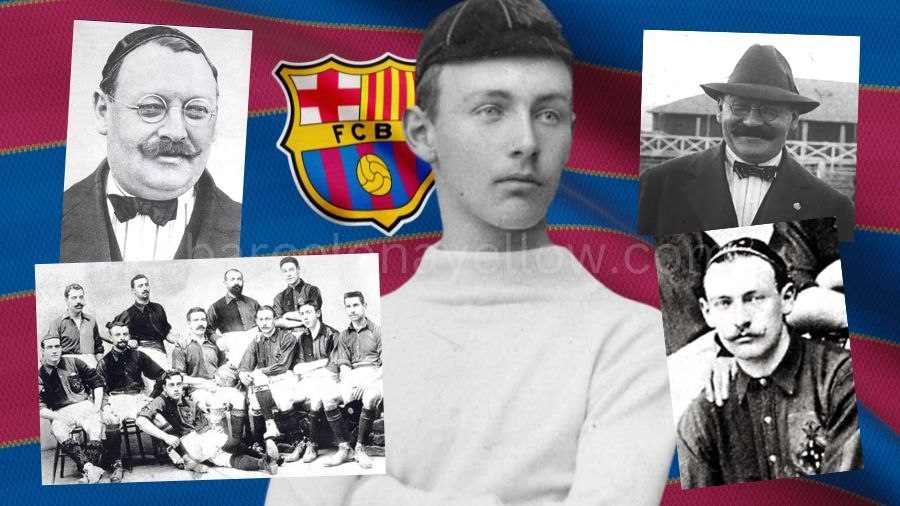

The History of FC Barcelona
FC Barcelona is a football club from Barcelona, Spain. Since it was founded in 1899, the club has become known for its trophies, famous players and strong connection with the city and its supporters.

The Foundation of Barcelona
On November 29, 1899, Swiss football enthusiast Joan Gamper and eleven other men met to establish a football club in Barcelona. The club grew from this small beginning into one of the best-known teams in Europe.

Important Moments in Barcelona History
- : FC Barcelona was officially founded.
- : Barcelona won the first Spanish League title.
- : Camp Nou stadium was inaugurated.
- : Johan Cruyff joined Barcelona and later helped the team win the league title in 1974.
- : Barcelona won its first European Cup.
- : Under Pep Guardiola, Barcelona won six major trophies during the calendar year.
- : Barcelona won La Liga, the Copa del Rey and the Champions League, completing a second continental treble.
Legends Who Made History
Throughout its history, Barcelona has been home to many celebrated players. Some of the best-known names include:
- Johan Cruyff
- Lionel Messi
- Xavi Hernández
- Andrés Iniesta
- Ronaldinho
- Carles Puyol
More Than a Club
Barcelona's famous motto,
Més que un club
, means
More than a club
. It represents the
club's identity, history, culture and connection
with its supporters.